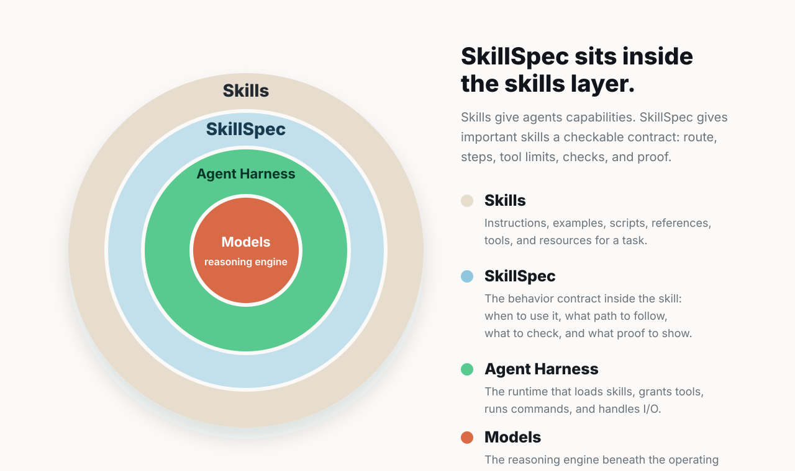

Measure the current skill
Run Doctor first. Treat the report as a baseline for the skill as it exists today, before SkillSpec changes anything.
skillspec doctor /path/to/skill --markdown > docs/skillspec-doctor-baseline.mdSkillSpec Doctor
Submit a public GitHub skill folder or repository. SkillSpec Doctor classifies the shape, measures the risk that an agent will miss or improvise instructions, and publishes a report that anyone can inspect.

Public requests are queued through GitHub Issues. You will review the prefilled issue before GitHub creates it.
Public Actions cannot inspect private source. Install locally and run Doctor from a checkout you control, then publish the Markdown report in your own repo or pull request if you want reviewers to see it.
curl -fsSL https://raw.githubusercontent.com/modiqo/skillspec/main/install.sh | sh
skillspec doctor /path/to/local/skill
skillspec doctor /path/to/local/skill --markdown > skillspec-doctor.mdFrom baseline to proof
Run Doctor first. Treat the report as a baseline for the skill as it exists today, before SkillSpec changes anything.
skillspec doctor /path/to/skill --markdown > docs/skillspec-doctor-baseline.mdAsk Codex, Claude, or Agents to port the skill. The agent should create the structured plan, compile it, test it, and print alignment.
/skillspec import <skill-repo-or-folder>, compile it, verify it, test it, and prove it. Print the alignment summary.The alignment summary should show the selected route, proven steps, missing proof if any, forbidden-action status, and run metrics when available.
Publish the baseline report, generated skill.spec.yml,
compiled loader, and alignment report with the repo or pull request.
Restart the harness after install, then use the SkillSpec-backed skill normally on a real task.
The loader stays small while the CLI guides route, phase, checks, resume, and proof.
Public report history
Workflow run history
Rendered report